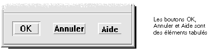

La présente annexe décrit les équivalences entre les touches du clavier et les boutons de la souris.
Affichage des menus310 |
Déplacement de la zone d'entrée clavier311 |
Ouverture et fermeture de fenêtres312 |
Navigation dans l'aide en ligne à l'aide du clavier319 |
Les raccourcis clavier permettent d'effectuer des opérations sur le Bureau, telles que déplacer et sélectionner des fenêtres et des objets de commande, ouvrir des menus et naviguer dans les espaces de travail sans utiliser la souris.
Lorsque vous utilisez le clavier pour naviguer sur le Bureau, notez que:
la touche Alt correspond à la touche de caractère étendu sur certains claviers ;
la touche Entrée correspond à la touche Retour;
dans le Gestionnaire de configuration, le paramètre Comportement de la fenêtre doit avoir la valeur Activation à la sélection (il s'agit de la valeur par défaut).
Pour plus de détails sur le comportement des fenêtres, reportez-vous au chapitre 7, “Personnalisation de l'environnement CDE.
Les options de menu estompées (affichées en gris) ne sont disponibles que dans certaines circonstances.
Un caractère souligné dans un nom ou une option de menu est une touche mnémonique. La séquence de touches figurant à droite de certaines options est un raccourci.
Les lettres mnémoniques et les raccourcis permettent d'accéder rapidement aux options de menu.
Pour sélectionner une option de menu déroulant à l'aide de sa touche mnémonique:
Appuyez sur Alt et tapez la lettre soulignée dans le nom du menu.
Tapez la lettre soulignée dans le nom de l'option.
On appelle zone d'entrée clavier l'élément mis en évidence d'une fenêtre, d'un menu ou d'un objet de commande sur lequel l'opération entrée au clavier sera effectuée. Pour activer une option de menu ou un objet de commande tel qu'un bouton, appuyez sur la barre d'espacement.
Dans les fenêtres et les boîtes de dialogue, vous pouvez déplacer la zone d'entrée clavier parmi des éléments tabulés (groupe d'objets de commande associés, tel qu'un ensemble de boutons) .
Dans la figure ci-dessus, la zone d'entrée clavier est le bouton OK.
Effectuez l'une des procédures ci-dessous .
Dans une fenêtre, une boîte de dialogue ou sur le Tableau de bord
Appuyez sur |
Pour activer |
Tabulation |
L'élément tabulé suivant. |
Maj+Tab |
L'élément tabulé précédent. |
Flèche vers le bas |
L'objet de commande suivant des éléments tabulés. |
Flèche vers le haut |
L'objet de commande précédent des éléments tabulés. |
F10 |
La barre de menus de la fenêtre. Pour dérouler les menus et passer d'une option à une autre, utilisez les flèches de déplacement. |
Maj+F10 |
Le menu instantané de l'objet sélectionné. Pour passer d'une option à une autre, utilisez les flèches de déplacement. |
Alt+barre d'espacement |
Le menu Fenêtre. |
Dans un espace de travail
Appuyez sur |
Pour activer |
Alt+Tab ou Alt+Échap |
La fenêtre ou l'icône suivante. |
Maj+Alt+Tab |
La fenêtre ou l'icône précédente. |
Alt+Flèche vers le haut |
La dernière fenêtre d'une pile de fenêtres (ce qui l'amène au premier plan). |
Alt+Flèche vers le bas |
Le bas de la pile de fenêtres. |
Alt+F6 |
La fenêtre suivante d'une application, ou pour naviguer entre le Tableau de bord et un panneau secondaire. |
Maj+Alt+F6 |
La fenêtre précédente d'une application, ou pour naviguer entre le Tableau de bord et un panneau secondaire. |
Dans un menu
Appuyez sur |
Pour activer |
Flèche vers le bas |
L'option suivante du menu. |
Flèche vers le haut |
L'option précédente du menu. |
Pour activer une option de menu sélectionnée, appuyez sur la barre d'espacement.
Pour fermer un menu, appuyez sur Échap.
À partir du Tableau de bord:
Appuyez sur Alt+Tab pour amener la zone d'entrée clavier sur le Tableau de bord.
Utilisez les flèches de déplacement de manière à mettre un objet de commande en évidence.
Appuyez sur Entrée ou sur la barre d'espacement pour sélectionner l'objet de commande et ouvrir la fenêtre correspondante.
À partir du Gestionnaire d'applications:
Suivez les instructions ci-dessus pour ouvrir le Gestionnaire d'applications.
Appuyez sur les flèches de déplacement pour amener la mise en évidence sur une icône de groupe d'applications.
Appuyez deux fois sur Entrée pour ouvrir le groupe d'applications.
Utilisez les flèches de déplacement pour mettre une icône d'application ou d'action en évidence et appuyez deux fois sur Entrée pour lancer l'application.
À partir d'une fenêtre d'émulation de terminal:
Suivez la procédure décrite ci-dessous pour ouvrir une fenêtre d'émulation de terminal à partir du Tableau de bord.
Dans la fenêtre, tapez la commande de lancement de l'application.
Lorsque vous fermez une fenêtre, elle disparaît de tous les espaces de travail.
Avant de fermer une fenêtre d'application, sauvegardez votre travail.
Appuyez sur Alt+Tab pour amener la mise en évidence sur la fenêtre à fermer.
Appuyez sur Alt+F4.
Appuyez sur Alt+Tab pour amener la mise en évidence sur la fenêtre ou l'icône à sélectionner.
Lorsqu'une fenêtre ou une icône est sélectionnée, son contour change de couleur pour indiquer qu'elle est active et que vous pouvez y entrer des commandes, à l'aide de la souris ou du clavier.
Appuyez sur Alt+Tab pour metter la fenêtre à réduire en évidence.
Appuyez sur Alt+barre d'espacement pour afficher le menu Fenêtre.
Sélectionnez l'option Réduire:
appuyez sur la flèche de déplacement vers le bas pour sélectionner l'option Réduire et appuyez sur Entrée
ou tapez la lettre U, correspondant à l'option Réduire
Appuyez sur Alt+Tab pour amener la mise en évidence sur l'icône à rétablir.
Appuyez sur Alt+barre d'espacement pour afficher le menu Fenêtre.
Appuyez sur la flèche de déplacement vers le bas pour sélectionner l'option Restaurer et appuyez sur Entrée.
Appuyez sur Alt+Tab pour amener la mise en évidence sur la fenêtre ou l'icône à déplacer.
Appuyez sur Alt+barre d'espacement pour afficher le menu Fenêtre.
Tapez la lettre D, correspondant à l'option Déplacer.
Appuyez sur les flèches de déplacement pour repositionner la fenêtre ou l'icône.
Pour accélérer l'opération, maintenez la touche Ctrl enfoncée tout en appuyant sur une flèche de déplacement.
Une fois l'emplacement voulu atteint, appuyez sur Entrée.
Pour annuler l'opération, appuyez sur Échap.
Appuyez sur Alt+Tab pour mettre la fenêtre à redimensionner en évidence.
Appuyez sur Alt+barre d'espacement pour afficher le menu Fenêtre.
Tapez la lettre m, correspondant à l'option Dimensionner.
Appuyez sur les flèches de déplacement pour agrandir ou réduire la fenêtre ; un cadre indiquant la taille de la fenêtre s'affiche.
Pour accélérer l'opération, maintenez la touche Ctrl enfoncée tout en appuyant sur une flèche de déplacement.
Lorsque le cadre a atteint la taille voulue, appuyez sur Entrée.
Pour annuler l'opération, appuyez sur Échap.
Appuyez sur Alt+Tab pour amener la zone d'entrée clavier indiquée par la mise en évidence sur la fenêtre dont vous souhaitez faire défiler le contenu.
Appuyez sur Tab pour accéder à la zone de la fenêtre à faire défiler.
Appuyez sur les flèches de déplacement, ou sur PgAv ou PgAr.
Pour accélérer le défilement, maintenez la touche Ctrl enfoncée tout en appuyant sur une touche de déplacement.
Certaines fenêtres et boîtes de dialogue contiennent des listes, dans lesquelles vous pouvez sélectionner des options ou des paramètres.
Appuyez sur Tab pour amener la mise en évidence sur la liste.
Pour faire défiler la liste, appuyez sur les flèches de déplacement vertical.
Pour sélectionner plusieurs éléments contigus dans des listes qui permettent cette opération, appuyez sur Maj+Flèche vers le bas ou Maj+Flèche vers le haut.
Appuyez sur Tab pour amener la mise en évidence sur le bouton voulu (par exemple, OK) et appuyez sur Entrée.
Pour afficher un menu déroulant à partir de la barre de menus d'une fenêtre:
Appuyez sur Alt+Tab pour amener la mise en évidence sur la fenêtre de l'application.
Appuyez sur F10 pour mettre en évidence le nom du premier menu, puis utilisez les flèches de déplacement pour afficher les menus et passer d'une option à une autre.
Appuyez sur Entrée pour sélectionner une option mise en évidence.
Pour fermer un menu sans sélectionner d'option, appuyez sur Échap.
Amenez la zone d'entrée clavier sur l'élément dont vous voulez afficher le menu instantané et effectuez les opérations suivantes:
Appuyez sur Maj+F10 pour afficher le menu instantané.
Pour sélectionner une option:
appuyez sur la flèche vers le bas pour vous déplacer dans le menu, mettez en évidence l'option souhaitée et appuyez sur Entrée
ou tapez la lettre soulignée dans le nom de l'option (lettre mnémonique)
ou tapez le raccourci indiqué à droite du nom de l'option
Appuyez sur Alt+Tab ou Alt+Échap pour amener la zone d'entrée clavier sur la fenêtre ou l'icône.
Appuyez sur Alt+barre d'espacement pour afficher le menu Fenêtre.
Tapez la lettre mnémonique de l'option (caractère souligné dans son nom).
Pour fermer le menu sans sélectionner d'option, appuyez sur Échap.
Appuyez sur Alt+Tab pour amener la zone d'entrée clavier sur le Tableau de bord.
Appuyez sur les flèches de déplacement pour amener la mise en évidence sur le bouton de l'espace de travail à afficher.
Appuyez sur Entrée ou sur la barre d'espacement.
Appuyez sur Alt+Tab pour amener la zone d'entrée clavier sur le Tableau de bord.
Appuyez sur les flèches de déplacement pour amener la mise en évidence sur le bouton de l'espace de travail à renommer.
Appuyez sur Maj+F10 pour afficher le menu instantané associé à ce bouton.
Appuyez sur la flèche de déplacement vers le bas pour sélectionner l'option Renommer et appuyez sur Entrée.
Le bouton correspondant à l'espace de travail devient une zone de texte.
Editez le nom de l'espace de travail dans cette zone.
Une fois cette opération effectuée, appuyez sur Entrée.
Pour vous déplacer vers la fenêtre ou l'icône suivante, appuyez sur Alt+Tab ou Alt+Échap.
Pour vous déplacer vers la fenêtre ou l'icône précédente, appuyez sur Maj+Alt+Tab ou Maj+Alt+Échap.
Pour vous déplacer dans une pile de fenêtres, appuyez sur Alt+Flèche vers le haut ou Alt+Flèche vers le bas.
Pour vous déplacer entre les fenêtres d'une application, ou entre le Tableau de bord et un panneau secondaire, appuyez sur Alt+F6 ou Maj+Alt+F6.
Appuyez sur Alt+Tab pour amener la zone d'entrée clavier indiquée par la mise en évidence sur la fenêtre à afficher dans d'autres espaces de travail.
Appuyez sur Alt+barre d'espacement pour afficher le menu Fenêtre.
Appuyez sur la flèche de déplacement vers le bas pour sélectionner l'option Occuper l'espace de travail et appuyez sur Entrée.
La boîte de dialogue correspondante s'affiche.
Appuyez sur la touche Tab pour amener la zone d'entrée clavier sur la liste des espaces de travail.
Sélectionnez ceux dans lesquels faire apparaître la fenêtre:
pour faire défiler la liste, appuyez sur les flèches de déplacement vertical
pour sélectionner plusieurs espaces, appuyez sur Maj+Flèche vers le bas ou Maj+Flèche vers le haut
Appuyez sur Tab pour mettre OK en évidence et appuyez sur Entrée.
Appuyez sur Alt+Tab pour amener la zone d'entrée clavier sur le Tableau de bord.
Appuyez sur les flèches de déplacement pour mettre un objet de commande en évidence.
Appuyez sur Entrée ou sur la barre d'espacement pour sélectionner l'objet de commande et ouvrir la fenêtre correspondante.
Appuyez sur Alt+Tab pour amener la zone d'entrée clavier sur le Tableau de bord.
Utilisez les flèches de déplacement pour amener la mise en évidence sur l'une des flèches permettant d'afficher un panneau secondaire et appuyez sur Entrée.
Appuyez sur les flèches de déplacement pour passer d'une option à une autre dans le panneau secondaire, puis sur Entrée ou sur la barre d'espacement pour activer l'option sélectionnée.
Pour fermer le panneau secondaire sans sélectionner d'option, appuyez sur Échap.
Appuyez sur Alt+Tab pour amener la zone d'entrée clavier sur le Tableau de bord.
Appuyez sur Alt+barre d'espacement pour afficher le menu du Tableau de bord.
Tapez la lettre c, correspondant à l'option Déplacer.
Appuyez sur les flèches de déplacement pour repositionner le Tableau de bord.
Pour accélérer l'opération, maintenez la touche Ctrl enfoncée tout en appuyant sur une flèche de déplacement.
Une fois l'emplacement voulu atteint, appuyez sur Entrée.
Pour annuler l'opération, appuyez sur Échap.
Appuyez sur F1 (ou sur la touche d'aide si le clavier en possède une).
Les hyperliens permettent d'afficher des informations d'aide apparentées. Ils apparaissent sous forme de :
texte souligné
boîte ouverte encadrant un graphique
S'il y a lieu, appuyez sur Alt+Tab pour amener la zone d'entrée clavier sur la fenêtre d'aide.
Appuyez sur Tab et sur les flèches de déplacement pour amener la mise en évidence sur l'hyperlien souhaité et appuyez sur Entrée.
Pour revenir au sujet précédent à partir d'un hyperlien :
Appuyez sur Ctrl+R, le raccourci clavier de l'option Revenir.
Pour plus de détails sur l'utilisation de l'aide, reportez-vous
au chapitre 3, “Accès à l'aide